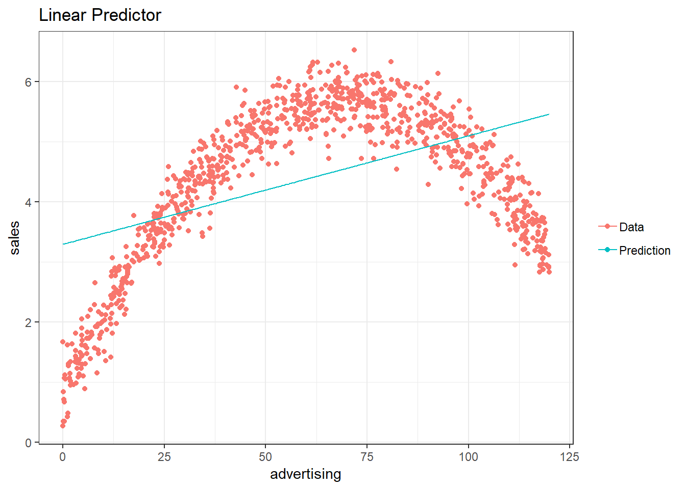
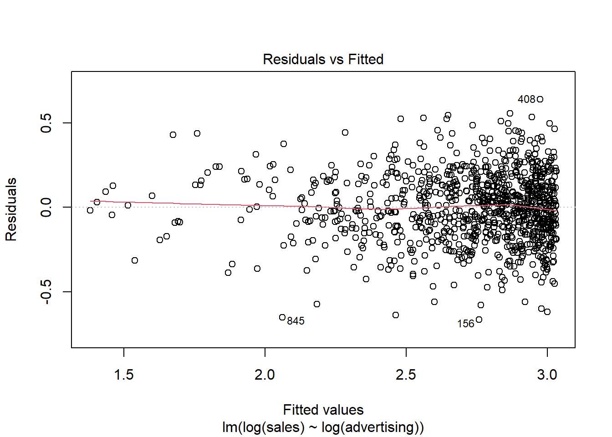

6 Regression
This chapter is primarily based on:
- Field, A., Miles J., & Field, Z. (2012): Discovering Statistics Using R. Sage Publications (chapters 6, 7, 8).
- James, G., Witten, D., Hastie, T., & Tibshirani, R. (2013): An Introduction to Statistical Learning with Applications in R, Springer (chapter 3)
6.1 Correlation
Before we start with regression analysis, we will review the basic concept of correlation first. Correlation helps us to determine the degree to which the variation in one variable, X, is related to the variation in another variable, Y.
6.1.1 Correlation coefficient
The correlation coefficient summarizes the strength of the linear relationship between two metric (interval or ratio scaled) variables. Let’s consider a simple example. Say you conduct a survey to investigate the relationship between the attitude towards a city and the duration of residency. The “Attitude” variable can take values between 1 (very unfavorable) and 12 (very favorable), and the “duration of residency” is measured in years. Let’s further assume for this example that the attitude measurement represents an interval scale (although it is usually not realistic to assume that the scale points on an itemized rating scale have the same distance). To keep it simple, let’s further assume that you only asked 12 people. We can create a short data set like this:
library(psych)
attitude <- c(6, 9, 8, 3, 10, 4, 5, 2, 11, 9, 10, 2)
duration <- c(10, 12, 12, 4, 12, 6, 8, 2, 18, 9, 17,
2)
att_data <- data.frame(attitude, duration)
att_data <- att_data[order(-attitude), ]
att_data$respodentID <- c(1:12)
str(att_data)## 'data.frame': 12 obs. of 3 variables:
## $ attitude : num 11 10 10 9 9 8 6 5 4 3 ...
## $ duration : num 18 12 17 12 9 12 10 8 6 4 ...
## $ respodentID: int 1 2 3 4 5 6 7 8 9 10 ...psych::describe(att_data[, c("attitude", "duration")])## vars n mean sd median trimmed mad min max range skew
## attitude 1 12 6.58 3.32 7.0 6.6 4.45 2 11 9 -0.14
## duration 2 12 9.33 5.26 9.5 9.2 4.45 2 18 16 0.10
## kurtosis se
## attitude -1.74 0.96
## duration -1.27 1.52att_data## attitude duration respodentID
## 9 11 18 1
## 5 10 12 2
## 11 10 17 3
## 2 9 12 4
## 10 9 9 5
## 3 8 12 6
## 1 6 10 7
## 7 5 8 8
## 6 4 6 9
## 4 3 4 10
## 8 2 2 11
## 12 2 2 12Let’s look at the data. The following graph shows the individual data points for the “duration of residency”" variable, where the blue horizontal line represents the mean of the variable (9.33) and the vertical lines show the distance of the individual data points from the mean.

Figure 6.1: Scores for duration of residency variable
You can see that there are some respondents that have been living in the city longer than average and some respondents that have been living in the city shorter than average. Let’s do the same for the second variable (“Attitude”):

Figure 6.2: Scores for attitude variable
Again, we can see that some respondents have an above average attitude towards the city (more favorable) and some respondents have a below average attitude towards the city. Let’s plot the data in one graph now to see if there is some co-movement:
Figure 6.3: Scores for attitude and duration of residency variables
We can see that there is indeed some co-movement here. The variables covary because respondents who have an above (below) average attitude towards the city also appear to have been living in the city for an above (below) average amount of time and vice versa. Correlation helps us to quantify this relationship. Before you proceed to compute the correlation coefficient, you should first look at the data. We usually use a scatterpot to visualize the relationship between two metric variables:

Figure 6.4: Scatterplot for durationand attitute variables
How can we compute the correlation coefficient? Remember that the variance measures the average deviation from the mean of a variable:
\[\begin{equation} \begin{split} s_x^2&=\frac{\sum_{i=1}^{N} (X_i-\overline{X})^2}{N-1} \\ &= \frac{\sum_{i=1}^{N} (X_i-\overline{X})*(X_i-\overline{X})}{N-1} \end{split} \tag{6.1} \end{equation}\]When we consider two variables, we multiply the deviation for one variable by the respective deviation for the second variable:
\((X_i-\overline{X})*(Y_i-\overline{Y})\)
This is called the cross-product deviation. Then we sum the cross-product deviations:
\(\sum_{i=1}^{N}(X_i-\overline{X})*(Y_i-\overline{Y})\)
… and compute the average of the sum of all cross-product deviations to get the covariance:
\[\begin{equation} Cov(x, y) =\frac{\sum_{i=1}^{N}(X_i-\overline{X})*(Y_i-\overline{Y})}{N-1} \tag{6.2} \end{equation}\]You can easily compute the covariance manually as follows
x <- att_data$duration
x_bar <- mean(att_data$duration)
y <- att_data$attitude
y_bar <- mean(att_data$attitude)
N <- nrow(att_data)
cov <- (sum((x - x_bar) * (y - y_bar)))/(N - 1)
cov## [1] 16.3Or you simply use the built-in cov() function:
cov(att_data$duration, att_data$attitude) # apply the cov function ## [1] 16.3A positive covariance indicates that as one variable deviates from the mean, the other variable deviates in the same direction. A negative covariance indicates that as one variable deviates from the mean (e.g., increases), the other variable deviates in the opposite direction (e.g., decreases).
However, the size of the covariance depends on the scale of measurement. Larger scale units will lead to larger covariance. To overcome the problem of dependence on measurement scale, we need to convert covariance to a standard set of units through standardization by dividing the covariance by the standard deviation (i.e., similar to how we compute z-scores).
With two variables, there are two standard deviations. We simply multiply the two standard deviations. We then divide the covariance by the product of the two standard deviations to get the standardized covariance, which is known as a correlation coefficient r:
\[\begin{equation} r=\frac{Cov_{xy}}{s_x*s_y} \tag{6.3} \end{equation}\]This is known as the product moment correlation (r) and it is straight-forward to compute:
x_sd <- sd(att_data$duration)
y_sd <- sd(att_data$attitude)
r <- cov/(x_sd * y_sd)
r## [1] 0.936Or you could just use the cor() function:
cor(att_data[, c("attitude", "duration")], method = "pearson",
use = "complete")## attitude duration
## attitude 1.000 0.936
## duration 0.936 1.000Properties of r:
- ranges from -1 to + 1
- +1 indicates perfect linear relationship
- -1 indicates perfect negative relationship
- 0 indicates no linear relationship
- ± .1 represents small effect
- ± .3 represents medium effect
- ± .5 represents large effect
6.1.2 Significance testing
How can we determine if our two variables are significantly related? To test this, we denote the population moment correlation ρ. Then we test the null of no relationship between variables:
\[H_0:\rho=0\] \[H_1:\rho\ne0\]
The test statistic is:
\[\begin{equation} t=\frac{r*\sqrt{N-2}}{\sqrt{1-r^2}} \tag{6.4} \end{equation}\]It has a t distribution with n - 2 degrees of freedom. Then, we follow the usual procedure of calculating the test statistic and comparing the test statistic to the critical value of the underlying probability distribution. If the calculated test statistic is larger than the critical value, the null hypothesis of no relationship between X and Y is rejected.
t_calc <- r * sqrt(N - 2)/sqrt(1 - r^2) #calculated test statistic
t_calc## [1] 8.41df <- (N - 2) #degrees of freedom
t_crit <- qt(0.975, df) #critical value
t_crit## [1] 2.23pt(q = t_calc, df = df, lower.tail = F) * 2 #p-value ## [1] 0.00000755Or you can simply use the cor.test() function, which also produces the 95% confidence interval:
cor.test(att_data$attitude, att_data$duration, alternative = "two.sided",
method = "pearson", conf.level = 0.95)##
## Pearson's product-moment correlation
##
## data: att_data$attitude and att_data$duration
## t = 8, df = 10, p-value = 0.000008
## alternative hypothesis: true correlation is not equal to 0
## 95 percent confidence interval:
## 0.783 0.982
## sample estimates:
## cor
## 0.936To determine the linear relationship between variables, the data only needs to be measured using interval scales. If you want to test the significance of the association, the sampling distribution needs to be normally distributed (we usually assume this when our data are normally distributed or when N is large). If parametric assumptions are violated, you should use non-parametric tests:
- Spearman’s correlation coefficient: requires ordinal data and ranks the data before applying Pearson’s equation.
- Kendall’s tau: use when N is small or the number of tied ranks is large.
cor.test(att_data$attitude, att_data$duration, alternative = "two.sided",
method = "spearman", conf.level = 0.95)##
## Spearman's rank correlation rho
##
## data: att_data$attitude and att_data$duration
## S = 10, p-value = 0.000002
## alternative hypothesis: true rho is not equal to 0
## sample estimates:
## rho
## 0.95cor.test(att_data$attitude, att_data$duration, alternative = "two.sided",
method = "kendall", conf.level = 0.95)##
## Kendall's rank correlation tau
##
## data: att_data$attitude and att_data$duration
## z = 4, p-value = 0.00009
## alternative hypothesis: true tau is not equal to 0
## sample estimates:
## tau
## 0.896Report the results:
A Pearson product-moment correlation coefficient was computed to assess the relationship between the duration of residence in a city and the attitude toward the city. There was a positive correlation between the two variables, r = 0.936, n = 12, p < 0.05. A scatterplot summarizes the results (Figure XY).
A note on the interpretation of correlation coefficients:
Correlation coefficients give no indication of the direction of causality. In our example, we can conclude that the attitude toward the city is more positive as the years of residence increases. However, we cannot say that the years of residence cause the attitudes to be more positive. There are two main reasons for caution when interpreting correlations:
- Third-variable problem: there may be other unobserved factors that affect the results.
- Direction of causality: Correlations say nothing about which variable causes the other to change (reverse causality: attitudes may just as well cause the years of residence variable).
6.2 Regression
Correlations measure relationships between variables (i.e., how much two variables covary). Using regression analysis we can predict the outcome of a dependent variable (Y) from one or more independent variables (X). E.g., how many products will we sell if we increase the advertising expenditures by 1000 Euros? In regression analysis, we fit a model to our data and use it to predict the values of the dependent variable from one predictor variable (bivariate regression) or several predictor variables (multiple regression). The following table shows a comparison of correlation and regression analysis:
| Correlation | Regression | |
|---|---|---|
| Estimated coefficient | Coefficient of correlation (bounded between -1 and +1) | Regression coefficient (not bounded a priori) |
| Interpretation | Linear association between two variables; Association is bidirectional | (Linear) relation between one or more independent variables and dependent variable; Relation is directional |
| Role of theory | Theory neither required nor testable | Theory required and testable |
6.2.1 Simple linear regression
In simple linear regression, we assess the relationship between one dependent (regressand) and one independent (regressor) variable. The goal is to fit a line through a scatterplot of observations in order to find the line that best describes the data (scatterplot).
Suppose you are a marketing research analyst at a music label and your task is to suggest, on the basis of past data, a marketing plan for the next year that will maximize product sales. The data set that is available to you includes information on the sales of music downloads (thousands of units), advertising expenditures (in Euros), the number of radio plays an artist received per week (airplay), the number of previous releases of an artist (starpower), repertoire origin (country; 0 = local, 1 = international), and genre (1 = rock, 2 = pop, 3 = electronic). Let’s load and inspect the data first:
regression <- read.table("https://raw.githubusercontent.com/IMSMWU/Teaching/master/MRDA2017/music_sales_regression.dat",
sep = "\t", header = TRUE) #read in data
regression$country <- factor(regression$country, levels = c(0:1),
labels = c("local", "international")) #convert grouping variable to factor
regression$genre <- factor(regression$genre, levels = c(1:3),
labels = c("rock", "pop", "electronic")) #convert grouping variable to factor
head(regression)psych::describe(regression) #descriptive statistics using psych## vars n mean sd median trimmed mad min max range
## sales 1 200 193.20 80.70 200 192.69 88.96 10.0 360 350
## adspend 2 200 614.41 485.66 532 560.81 489.09 9.1 2272 2263
## airplay 3 200 27.50 12.27 28 27.46 11.86 0.0 63 63
## starpower 4 200 6.77 1.40 7 6.88 1.48 1.0 10 9
## genre* 5 200 2.40 0.79 3 2.50 0.00 1.0 3 2
## country* 6 200 1.17 0.38 1 1.09 0.00 1.0 2 1
## skew kurtosis se
## sales 0.04 -0.72 5.71
## adspend 0.84 0.17 34.34
## airplay 0.06 -0.09 0.87
## starpower -1.27 3.56 0.10
## genre* -0.83 -0.91 0.06
## country* 1.74 1.05 0.03As stated above, regression analysis may be used to relate a quantitative response (“dependent variable”) to one or more predictor variables (“independent variables”). In a simple linear regression, we have one dependent and one independent variable.
Here are a few important questions that we might seek to address based on the data:
- Is there a relationship between advertising budget and sales?
- How strong is the relationship between advertising budget and sales?
- Which other variables contribute to sales?
- How accurately can we estimate the effect of each variable on sales?
- How accurately can we predict future sales?
- Is the relationship linear?
- Is there synergy among the advertising activities?
We may use linear regression to answer these questions. Let’s start with the first question and investigate the effect of advertising on sales.
6.2.1.1 Estimating the coefficients
A simple linear regression model only has one predictor and can be written as:
\[\begin{equation} Y=\beta_0+\beta_1X+\epsilon \tag{6.5} \end{equation}\]In our specific context, let’s consider only the influence of advertising on sales for now:
\[\begin{equation} Sales=\beta_0+\beta_1*adspend+\epsilon \tag{6.6} \end{equation}\]The word “adspend” represents data on advertising expenditures that we have observed and β1 (the “slope”“) represents the unknown relationship between advertising expenditures and sales. It tells you by how much sales will increase for an additional Euro spent on advertising. β0 (the”intercept“) is the number of sales we would expect if no money is spent on advertising. Together, β0 and β1 represent the model coefficients or parameters. The error term (ε) captures everything that we miss by using our model, including, (1) misspecifications (the true relationship might not be linear), (2) omitted variables (other variables might drive sales), and (3) measurement error (our measurement of the variables might be imperfect).
Once we have used our training data to produce estimates for the model coefficients, we can predict future sales on the basis of a particular value of advertising expenditures by computing:
\[\begin{equation} \hat{Sales}=\hat{\beta_0}+\hat{\beta_1}*adspend \tag{6.7} \end{equation}\]We use the hat symbol, ^, to denote the estimated value for an unknown parameter or coefficient, or to denote the predicted value of the response (sales). In practice, β0 and β1 are unknown and must be estimated from the data to make predictions. In the case of our advertising example, the data set consists of the advertising budget and product sales (n = 200). Our goal is to obtain coefficient estimates such that the linear model fits the available data well. In other words, we fit a line through the scatterplot of observations and try to find the line that best describes the data. The following graph shows the scatterplot for our data, where the black line shows the regression line. The grey vertical lines shows the difference between the predicted values (the regression line) and the observed values. This difference is referred to as the residuals (“e”).
Figure 6.5: Ordinary least squares (OLS)
Estimation of the regression function is based on the idea of the method of least squares (OLS = ordinary least squares). The first step is to calculate the residuals by subtracting the observed values from the predicted values.
\(e_i = Y_i-(\beta_0+\beta_1X_i)\)
This difference is then minimized by minimizing the sum of the squared residuals:
\[\begin{equation} \sum_{i=1}^{N} e_i^2= \sum_{i=1}^{N} [Y_i-(\beta_0+\beta_1X_i)]^2\rightarrow min! \tag{6.8} \end{equation}\]ei: Residuals (i = 1,2,…,N)
Yi: Values of the dependent variable (i = 1,2,…,N)
β0: Intercept
β1: Regression coefficient / slope parameters
Xni: Values of the nth independent variables and the ith observation
N: Number of observations
This is also referred to as the residual sum of squares (RSS). Now we need to choose the values for β0 and β1 that minimize RSS. So how can we derive these values for the regression coefficient? The equation for β1 is given by:
\[\begin{equation} \hat{\beta_1}=\frac{COV_{XY}}{s_x^2} \tag{6.9} \end{equation}\]The exact mathematical derivation of this formula is beyond the scope of this script, but the intuition is to calculate the first derivative of the squared residuals with respect to β1 and set it to zero, thereby finding the β1 that minimizes the term. Using the above formula, you can easily compute β1 using the following code:
cov_y_x <- cov(regression$adspend, regression$sales)
cov_y_x## [1] 22672var_x <- var(regression$adspend)
var_x## [1] 235861beta_1 <- cov_y_x/var_x
beta_1## [1] 0.0961The interpretation of β1 is as follows:
For every extra Euros spent on advertising, sales can be expected to increase by 0.096 units. Or, in other words, if we increase our marketing budget by 1,000 Euros, sales can be expected to increase by 96 units.
Using the estimated coefficient for β1 , it is easy to compute β0 (the intercept) as follows:
\[\begin{equation} \hat{\beta_0}=\overline{Y}-\hat{\beta_1}\overline{X} \tag{6.10} \end{equation}\]The R code for this is:
beta_0 <- mean(regression$sales) - beta_1 * mean(regression$adspend)
beta_0## [1] 134The interpretation of β0 is as follows:
If we spend no money on advertising, we would expect to sell 134.14 units.
You may also verify this based on a scatterplot of the data. The following plot shows the scatterplot including the regression line, which is estimated using OLS.
ggplot(regression, mapping = aes(adspend, sales)) +
geom_point(shape = 1) + geom_smooth(method = "lm",
fill = "blue", alpha = 0.1) + labs(x = "Advertising expenditures (EUR)",
y = "Number of sales", colour = "store") + theme_bw()
Figure 6.6: Scatterplot
You can see that the regression line intersects with the y-axis at 134.14, which corresponds to the expected sales level when advertising expenditure (on the x-axis) is zero (i.e., the intercept β0). The slope coefficient (β1) tells you by how much sales (on the y-axis) would increase if advertising expenditures (on the x-axis) are increased by one unit.
6.2.1.2 Significance testing
In a next step, we assess if the effect of advertising on sales is statistically significant. This means that we test the null hypothesis H0: “There is no relationship between advertising and sales” versus the alternative hypothesis H1: “The is some relationship between advertising and sales”. Or, to state this mathematically:
\[H_0:\beta_1=0\] \[H_1:\beta_1\ne0\]
How can we test if the effect is statistically significant? Recall the generalized equation to derive a test statistic:
\[\begin{equation} test\ statistic = \frac{effect}{error} \tag{6.11} \end{equation}\]The effect is given by the β1 coefficient in this case. To compute the test statistic, we need to come up with a measure of uncertainty around this estimate (the error). This is because we use information from a sample to estimate the least squares line to make inferences regarding the regression line in the entire population. Since we only have access to one sample, the regression line will be slightly different every time we take a different sample from the population. This is sampling variation and it is perfectly normal! It just means that we need to take into account the uncertainty around the estimate, which is achieved by the standard error. Thus, the test statistic for our hypothesis is given by:
\[\begin{equation} t = \frac{\hat{\beta_1}}{SE(\hat{\beta_1})} \tag{6.12} \end{equation}\]After calculating the test statistic, we compare its value to the values that we would expect to find if there was no effect based on the t-distribution. In a regression context, the degrees of freedom are given by N - p - 1 where N is the sample size and p is the number of predictors. In our case, we have 200 observations and one predictor. Thus, the degrees of freedom is 200 - 1 - 1 = 198. In the regression output below, R provides the exact probability of observing a t value of this magnitude (or larger) if the null hypothesis was true. This probability is the p-value. A small p-value indicates that it is unlikely to observe such a substantial association between the predictor and the outcome variable due to chance in the absence of any real association between the predictor and the outcome.
To estimate the regression model in R, you can use the lm() function. Within the function, you first specify the dependent variable (“sales”) and independent variable (“adspend”) separated by a ~ (tilde). As mentioned previously, this is known as formula notation in R. The data = regression argument specifies that the variables come from the data frame named “regression”. Strictly speaking, you use the lm() function to create an object called “simple_regression,” which holds the regression output. You can then view the results using the summary() function:
simple_regression <- lm(sales ~ adspend, data = regression) #estimate linear model
summary(simple_regression) #summary of results##
## Call:
## lm(formula = sales ~ adspend, data = regression)
##
## Residuals:
## Min 1Q Median 3Q Max
## -152.95 -43.80 -0.39 37.04 211.87
##
## Coefficients:
## Estimate Std. Error t value Pr(>|t|)
## (Intercept) 134.13994 7.53657 17.80 <0.0000000000000002 ***
## adspend 0.09612 0.00963 9.98 <0.0000000000000002 ***
## ---
## Signif. codes: 0 '***' 0.001 '**' 0.01 '*' 0.05 '.' 0.1 ' ' 1
##
## Residual standard error: 66 on 198 degrees of freedom
## Multiple R-squared: 0.335, Adjusted R-squared: 0.331
## F-statistic: 99.6 on 1 and 198 DF, p-value: <0.0000000000000002Note that the estimated coefficients for β0 (134.14) and β1 (0.096) correspond to the results of our manual computation above. The associated t-values and p-values are given in the output. The t-values are larger than the critical t-values for the 95% confidence level, since the associated p-values are smaller than 0.05. In case of the coefficient for β1 this means that the probability of an association between the advertising and sales of the observed magnitude (or larger) is smaller than 0.05, if the value of β1 was, in fact, 0.
The coefficients associated with the respective variables represent point estimates. To get a better feeling for the range of values that the coefficients could take, it is helpful to compute confidence intervals. A 95% confidence interval is defined as a range of values such that with a 95% probability, the range will contain the true unknown value of the parameter. For example, for β1, the confidence interval can be computed as.
\[\begin{equation} CI = \hat{\beta_1}\pm(t_{1-\frac{\alpha}{2}}*SE(\beta_1)) \tag{6.13} \end{equation}\]It is easy to compute confidence intervals in R using the confint() function. You just have to provide the name of you estimated model as an argument:
confint(simple_regression)## 2.5 % 97.5 %
## (Intercept) 119.2777 149.002
## adspend 0.0771 0.115For our model, the 95% confidence interval for β0 is [119.28,149], and the 95% confidence interval for β1 is [0.08,0.12]. Thus, we can conclude that when we do not spend any money on advertising, sales will be somewhere between 119 and 149 units on average. In addition, for each increase in advertising expenditures by one Euro, there will be an average increase in sales of between 0.08 and 0.12.
6.2.1.3 Assessing model fit
Once we have rejected the null hypothesis in favor of the alternative hypothesis, the next step is to investigate to what extent the model represents (“fits”) the data. How can we assess the model fit?
- First, we calculate the fit of the most basic model (i.e., the mean)
- Then, we calculate the fit of the best model (i.e., the regression model)
- A good model should fit the data significantly better than the basic model
- R2: Represents the percentage of the variation in the outcome that can be explained by the model
- The F-ratio measures how much the model has improved the prediction of the outcome compared to the level of inaccuracy in the model
Similar to ANOVA, the calculation of model fit statistics relies on estimating the different sum of squares values. SST is the difference between the observed data and the mean value of Y (aka. total variation). In the absence of any other information, the mean value of Y represents the best guess on where an observation at a given level of advertising will fall:
\[\begin{equation} SS_T= \sum_{i=1}^{N} (Y_i-\overline{Y})^2 \tag{6.14} \end{equation}\]The following graph shows the total sum of squares:
Figure 6.7: Total sum of squares
Based on our linear model, the best guess about the sales level at a given level of advertising is the predicted value. The model sum of squares (SSM) has the mathematical representation:
\[\begin{equation} SS_M= \sum_{j=1}^{c} n_j(\overline{Y}_j-\overline{Y})^2 \tag{6.15} \end{equation}\]The model sum of squares represents the improvement in prediction resulting from using the regression model rather than the mean of the data. The following graph shows the model sum of squares for our example:
Figure 6.8: Ordinary least squares (OLS)
The residual sum of squares (SSR) is the difference between the observed data and the predicted values along the regression line (i.e., the variation not explained by the model)
\[\begin{equation} SS_R= \sum_{j=1}^{c} \sum_{i=1}^{n} ({Y}_{ij}-\overline{Y}_{j})^2 \tag{6.16} \end{equation}\]The following graph shows the residual sum of squares for our example:
Figure 6.9: Ordinary least squares (OLS)
R-squared
The R2 statistic represents the proportion of variance that is explained by the model and is computed as:
\[\begin{equation} R^2= \frac{SS_M}{SS_T} \tag{6.16} \end{equation}\]It takes values between 0 (very bad fit) and 1 (very good fit). Note that when the goal of your model is to predict future outcomes, a “too good” model fit can pose severe challenges. The reason is that the model might fit your specific sample so well, that it will only predict well within the sample but not generalize to other samples. This is called overfitting and it shows that there is a trade-off between model fit and out-of-sample predictive ability of the model, if the goal is to predict beyond the sample.
You can get a first impression of the fit of the model by inspecting the scatter plot as can be seen in the plot below. If the observations are highly dispersed around the regression line (left plot), the fit will be lower compared to a data set where the values are less dispersed (right plot).

Figure 6.10: Good vs. bad model fit
The R2 statistic is reported in the regression output (see above). However, you could also extract the relevant sum of squares statistics from the regression object using the anova() function to compute it manually:
anova(simple_regression) #anova results## Analysis of Variance Table
##
## Response: sales
## Df Sum Sq Mean Sq F value Pr(>F)
## adspend 1 433688 433688 99.6 <0.0000000000000002 ***
## Residuals 198 862264 4355
## ---
## Signif. codes: 0 '***' 0.001 '**' 0.01 '*' 0.05 '.' 0.1 ' ' 1Now we can compute R2 in the same way that we have computed Eta2 in the last section:
r2 <- anova(simple_regression)$"Sum Sq"[1]/(anova(simple_regression)$"Sum Sq"[1] +
anova(simple_regression)$"Sum Sq"[2]) #compute R2Adjusted R-squared
Due to the way the R2 statistic is calculated, it will never decrease if a new explanatory variable is introduced into the model. This means that every new independent variable either doesn’t change the R2 or increases it, even if there is no real relationship between the new variable and the dependent variable. Hence, one could be tempted to just add as many variables as possible to increase the R2 and thus obtain a “better” model. However, this actually only leads to more noise and therefore a worse model.
To account for this, there exists a test statistic closely related to the R2, the adjusted R2. It can be calculated as follows:
\[\begin{equation} \overline{R^2} = 1 - (1 - R^2)\frac{n-1}{n - k - 1} \tag{6.17} \end{equation}\]where n is the total number of observations and k is the total number of explanatory variables. The adjusted adjusted R2 is equal to or less than the regular R2 and can be negative. It will only increase if the added variable adds more explanatory power than one expect by pure chance. Essentially, it contains a “penalty” for including unnecessary variables and therefore favors more parsimonious models. As such, it is a measure of suitability, good for comparing different models and is very useful in the model selection stage of a project. In R, the standard lm() function automatically also reports the adjusted R2.
F-test
Another significance test is the F-test. It tests the null hypothesis:
\[H_0:R^2=0\]
This is equivalent to the following null hypothesis:
\[H_0:\beta_1=\beta_2=\beta_3=\beta_k=0\]
The F-test statistic is calculated as follows:
\[\begin{equation} F=\frac{\frac{SS_M}{k}}{\frac{SS_R}{(n-k-1)}}=\frac{MS_M}{MS_R} \tag{6.16} \end{equation}\]which has a F distribution with k number of predictors and n degrees of freedom. In other words, you divide the systematic (“explained”) variation due to the predictor variables by the unsystematic (“unexplained”) variation.
The result of the F-test is provided in the regression output. However, you might manually compute the F-test using the ANOVA results from the model:
anova(simple_regression) #anova results## Analysis of Variance Table
##
## Response: sales
## Df Sum Sq Mean Sq F value Pr(>F)
## adspend 1 433688 433688 99.6 <0.0000000000000002 ***
## Residuals 198 862264 4355
## ---
## Signif. codes: 0 '***' 0.001 '**' 0.01 '*' 0.05 '.' 0.1 ' ' 1f_calc <- anova(simple_regression)$"Mean Sq"[1]/anova(simple_regression)$"Mean Sq"[2] #compute F
f_calc## [1] 100f_crit <- qf(0.95, df1 = 1, df2 = 100) #critical value
f_crit## [1] 3.9f_calc > f_crit #test if calculated test statistic is larger than critical value## [1] TRUE6.2.1.4 Using the model
After fitting the model, we can use the estimated coefficients to predict sales for different values of advertising. Suppose you want to predict sales for a new product, and the company plans to spend 800 Euros on advertising. How much will it sell? You can easily compute this either by hand:
\[\hat{sales}=134.134 + 0.09612*800=211\]
… or by extracting the estimated coefficients from the model summary:
summary(simple_regression)$coefficients[1,1] + # the intercept
summary(simple_regression)$coefficients[2,1]*800 # the slope * 800## [1] 211The predicted value of the dependent variable is 211 units, i.e., the product will (on average) sell 211 units.
The following video summarizes how to conduct simple linear regression in R
6.2.2 Multiple linear regression
Multiple linear regression is a statistical technique that simultaneously tests the relationships between two or more independent variables and an interval-scaled dependent variable. The general form of the equation is given by:
\[\begin{equation} Y=(\beta_0+\beta_1*X_1+\beta_2*X_2+\beta_n*X_n)+\epsilon \tag{6.5} \end{equation}\]Again, we aim to find the linear combination of predictors that correlate maximally with the outcome variable. Note that if you change the composition of predictors, the partial regression coefficient of an independent variable will be different from that of the bivariate regression coefficient. This is because the regressors are usually correlated, and any variation in Y that was shared by X1 and X2 was attributed to X1. The interpretation of the partial regression coefficients is the expected change in Y when X is changed by one unit and all other predictors are held constant.
Let’s extend the previous example. Say, in addition to the influence of advertising, you are interested in estimating the influence of airplay on the number of album downloads. The corresponding equation would then be given by:
\[\begin{equation} Sales=\beta_0+\beta_1*adspend+\beta_2*airplay+\epsilon \tag{6.6} \end{equation}\]The words “adspend” and “airplay” represent data that we have observed on advertising expenditures and number of radio plays, and β1 and β2 represent the unknown relationship between sales and advertising expenditures and radio airplay, respectively. The coefficients tells you by how much sales will increase for an additional Euro spent on advertising (when radio airplay is held constant) and by how much sales will increase for an additional radio play (when advertising expenditures are held constant). Thus, we can make predictions about album sales based not only on advertising spending, but also on radio airplay.
With several predictors, the partitioning of sum of squares is the same as in the bivariate model, except that the model is no longer a 2-D straight line. With two predictors, the regression line becomes a 3-D regression plane. In our example:
Figure 6.11: Regression plane
Like in the bivariate case, the plane is fitted to the data with the aim to predict the observed data as good as possible. The deviation of the observations from the plane represent the residuals (the error we make in predicting the observed data from the model). Note that this is conceptually the same as in the bivariate case, except that the computation is more complex (we won’t go into details here). The model is fairly easy to plot using a 3-D scatterplot, because we only have two predictors. While multiple regression models that have more than two predictors are not as easy to visualize, you may apply the same principles when interpreting the model outcome:
- Total sum of squares (SST) is still the difference between the observed data and the mean value of of Y (total variation)
- Residual sum of squares (SSR) is still the difference between the observed data and the values predicted by the model (unexplained variation)
- Model sum of squares (SSM) is still the difference between the values predicted by the model and the mean value of of Y (explained variation)
- R measures the multiple correlation between the predictors and the outcome
- R2 is the amount of variation in the outcome variable explained by the model
Estimating multiple regression models is straightforward using the lm() function. You just need to separate the individual predictors on the right hand side of the equation using the + symbol. For example, the model:
could be estimated as follows:
multiple_regression <- lm(sales ~ adspend + airplay +
starpower, data = regression) #estimate linear model
summary(multiple_regression) #summary of results##
## Call:
## lm(formula = sales ~ adspend + airplay + starpower, data = regression)
##
## Residuals:
## Min 1Q Median 3Q Max
## -121.32 -28.34 -0.45 28.97 144.13
##
## Coefficients:
## Estimate Std. Error t value Pr(>|t|)
## (Intercept) -26.61296 17.35000 -1.53 0.13
## adspend 0.08488 0.00692 12.26 < 0.0000000000000002 ***
## airplay 3.36743 0.27777 12.12 < 0.0000000000000002 ***
## starpower 11.08634 2.43785 4.55 0.0000095 ***
## ---
## Signif. codes: 0 '***' 0.001 '**' 0.01 '*' 0.05 '.' 0.1 ' ' 1
##
## Residual standard error: 47 on 196 degrees of freedom
## Multiple R-squared: 0.665, Adjusted R-squared: 0.66
## F-statistic: 129 on 3 and 196 DF, p-value: <0.0000000000000002The interpretation of the coefficients is as follows:
- adspend (β1): when advertising expenditures increase by 1 Euro, sales will increase by 0.08 units
- airplay (β2): when radio airplay increases by 1 play per week, sales will increase by 3.37 units
- starpower (β3): when the number of previous albums increases by 1, sales will increase by 11.09 units
The associated t-values and p-values are also given in the output. You can see that the p-values are smaller than 0.05 for all three coefficients. Hence, all effects are “significant”. This means that if the null hypothesis was true (i.e., there was no effect between the variables and sales), the probability of observing associations of the estimated magnitudes (or larger) is very small (e.g., smaller than 0.05).
Again, to get a better feeling for the range of values that the coefficients could take, it is helpful to compute confidence intervals.
confint(multiple_regression)## 2.5 % 97.5 %
## (Intercept) -60.830 7.604
## adspend 0.071 0.099
## airplay 2.820 3.915
## starpower 6.279 15.894What does this tell you? Recall that a 95% confidence interval is defined as a range of values such that with a 95% probability, the range will contain the true unknown value of the parameter. For example, for β3, the confidence interval is [6.28,15.89]. Thus, although we have computed a point estimate of 11.09 for the effect of starpower on sales based on our sample, the effect might actually just as well take any other value within this range, considering the sample size and the variability in our data.
The output also tells us that 66.47% of the variation can be explained by our model. You may also visually inspect the fit of the model by plotting the predicted values against the observed values. We can extract the predicted values using the predict() function. So let’s create a new variable yhat, which contains those predicted values.
regression$yhat <- predict(simple_regression)We can now use this variable to plot the predicted values against the observed values. In the following plot, the model fit would be perfect if all points would fall on the diagonal line. The larger the distance between the points and the line, the worse the model fit.
ggplot(regression,aes(yhat,sales)) +
geom_point(size=2,shape=1) + #Use hollow circles
scale_x_continuous(name="predicted values") +
scale_y_continuous(name="observed values") +
geom_abline(intercept = 0, slope = 1) +
theme_bw()Figure 6.12: Model fit
Partial plots
In the context of a simple linear regression (i.e., with a single independent variable), a scatter plot of the dependent variable against the independent variable provides a good indication of the nature of the relationship. If there is more than one independent variable, however, things become more complicated. The reason is that although the scatter plot still show the relationship between the two variables, it does not take into account the effect of the other independent variables in the model. Partial regression plot show the effect of adding another variable to a model that already controls for the remaining variables in the model. In other words, it is a scatterplot of the residuals of the outcome variable and each predictor when both variables are regressed separately on the remaining predictors. As an example, consider the effect of advertising expenditures on sales. In this case, the partial plot would show the effect of adding advertising expenditures as an explanatory variable while controlling for the variation that is explained by airplay and starpower in both variables (sales and advertising). Think of it as the purified relationship between advertising and sales that remains after controlling for other factors. The partial plots can easily be created using the avPlots() function from the car package:
library(car)
avPlots(multiple_regression)
Figure 6.13: Partial plots
Using the model
After fitting the model, we can use the estimated coefficients to predict sales for different values of advertising, airplay, and starpower. Suppose you would like to predict sales for a new music album with advertising expenditures of 800, airplay of 30 and starpower of 5. How much will it sell?
\[\hat{sales}=−26.61 + 0.084 * 800 + 3.367*30 + 11.08 ∗ 5= 197.74\]
… or by extracting the estimated coefficients:
summary(multiple_regression)$coefficients[1, 1] + summary(multiple_regression)$coefficients[2,
1] * 800 + summary(multiple_regression)$coefficients[3,
1] * 30 + summary(multiple_regression)$coefficients[4,
1] * 5## [1] 198The predicted value of the dependent variable is 198 units, i.e., the product will sell 198 units.
Comparing effects
Using the output from the regression model above, it is difficult to compare the effects of the independent variables because they are all measured on different scales (Euros, radio plays, releases). Standardized regression coefficients can be used to judge the relative importance of the predictor variables. Standardization is achieved by multiplying the unstandardized coefficient by the ratio of the standard deviations of the independent and dependent variables:
\[\begin{equation} B_{k}=\beta_{k} * \frac{s_{x_k}}{s_y} \tag{6.18} \end{equation}\]Hence, the standardized coefficient will tell you by how many standard deviations the outcome will change as a result of a one standard deviation change in the predictor variable. Standardized coefficients can be easily computed using the lm.beta() function from the lm.beta package.
library(lm.beta)
lm.beta(multiple_regression)##
## Call:
## lm(formula = sales ~ adspend + airplay + starpower, data = regression)
##
## Standardized Coefficients::
## (Intercept) adspend airplay starpower
## 0.00 0.51 0.51 0.19The results show that for adspend and airplay, a change by one standard deviation will result in a 0.51 standard deviation change in sales, whereas for starpower, a one standard deviation change will only lead to a 0.19 standard deviation change in sales. Hence, while the effects of adspend and airplay are comparable in magnitude, the effect of starpower is less strong.
The following video summarizes how to conduct multiple regression in R
6.3 Potential problems
Once you have built and estimated your model it is important to run diagnostics to ensure that the results are accurate. In the following section we will discuss common problems.
6.3.1 Outliers
Outliers are data points that differ vastly from the trend. They can introduce bias into a model due to the fact that they alter the parameter estimates. Consider the example below. A linear regression was performed twice on the same data set, except during the second estimation the two green points were changed to be outliers by being moved to the positions indicated in red. The solid red line is the regression line based on the unaltered data set, while the dotted line was estimated using the altered data set. As you can see the second regression would lead to different conclusions than the first. Therefore it is important to identify outliers and further deal with them.

Figure 6.14: Effects of outliers
One quick way to visually detect outliers is by creating a scatterplot (as above) to see whether anything seems off. Another approach is to inspect the studentized residuals. If there are no outliers in your data, about 95% will be between -2 and 2, as per the assumptions of the normal distribution. Values well outside of this range are unlikely to happen by chance and warrant further inspection. As a rule of thumb, observations whose studentized residuals are greater than 3 in absolute values are potential outliers.
The studentized residuals can be obtained in R with the function rstudent(). We can use this function to create a new variable that contains the studentized residuals e music sales regression from before yields the following residuals:
regression$stud_resid <- rstudent(multiple_regression)
head(regression)A good way to visually inspect the studentized residuals is to plot them in a scatterplot and roughly check if most of the observations are within the -3, 3 bounds.
plot(1:nrow(regression), regression$stud_resid, ylim = c(-3.3,
3.3)) #create scatterplot
abline(h = c(-3, 3), col = "red", lty = 2) #add reference lines
Figure 6.15: Plot of the studentized residuals
To identify potentially influential observations in our data set, we can apply a filter to our data:
outliers <- subset(regression, abs(stud_resid) > 3)
outliersAfter a detailed inspection of the potential outliers, you might decide to delete the affected observations from the data set or not. If an outlier has resulted from an error in data collection, then you might simply remove the observation. However, even though data may have extreme values, they might not be influential to determine a regression line. That means, the results wouldn’t be much different if we either include or exclude them from analysis. This means that the decision of whether to exclude an outlier or not is closely related to the question whether this observation is an influential observation, as will be discussed next.
6.3.2 Influential observations
Related to the issue of outliers is that of influential observations, meaning observations that exert undue influence on the parameters. It is possible to determine whether or not the results are driven by an influential observation by calculating how far the predicted values for your data would move if the model was fitted without this particular observation. This calculated total distance is called Cook’s distance. To identify influential observations, we can inspect the respective plots created from the model output. A rule of thumb to determine whether an observation should be classified as influential or not is to look for observation with a Cook’s distance > 1 (although opinions vary on this). The following plot can be used to see the Cook’s distance associated with each data point:
plot(multiple_regression, 4)Figure 6.16: Cook’s distance
It is easy to see that none of the Cook’s distance values is close to the critical value of 1. Another useful plot to identify influential observations is plot number 5 from the output:
plot(multiple_regression, 5)
Figure 6.17: Residuals vs. Leverage
In this plot, we look for cases outside of a dashed line, which represents Cook’s distance. Lines for Cook’s distance thresholds of 0.5 and 1 are included by default. In our example, this line is not even visible, since the Cook’s distance values are far away from the critical values. Generally, you would watch out for outlying values at the upper right corner or at the lower right corner of the plot. Those spots are the places where cases can be influential against a regression line. In our example, there are no influential cases.
To see how influential observations can impact your regression, have a look at this example.
6.3.3 Non-linearity
An important underlying assumption for OLS is that of linearity, meaning that the relationship between the dependent and the independent variable can be reasonably approximated in linear terms. One quick way to assess whether a linear relationship can be assumed is to inspect the added variable plots that we already came across earlier:
library(car)
avPlots(multiple_regression)Figure 6.18: Partial plots
In our example, it appears that linear relationships can be reasonably assumed. Please note, however, that the assumption of linearity implies two things:
- Constant marginal returns (e.g., an increase in ad-spend from 10€ to 11€ yields the same increase in sales as an increase from 100,000€ to 100,001€)
- Elasticities increase with X (e.g., advertising becomes relatively more effective; i.e., a relatively smaller change in advertising expenditure will yield the same return)
These assumptions may not be justifiable in certain contexts and you might have to transform your data (e.g., using log-transformations) in these cases, as we will see below.
6.3.4 Non-constant error variance
Another important assumption of the linear model is that the error terms have a constant variance (i.e., homoscedasticity). The following plot from the model output shows the residuals (the vertical distance from an observed value to the predicted values) versus the fitted values (the predicted value from the regression model). If all the points fell exactly on the dashed grey line, it would mean that we have a perfect prediction. The residual variance (i.e., the spread of the values on the y-axis) should be similar across the scale of the fitted values on the x-axis.
plot(multiple_regression, 1)Figure 6.19: Residuals vs. fitted values
In our case, this appears to be the case. You can identify non-constant variances in the errors (i.e., heteroscedasticity) from the presence of a funnel shape in the above plot. When the assumption of constant error variances is not met, this might be due to a misspecification of your model (e.g., the relationship might not be linear). In these cases, it often helps to transform your data (e.g., using log-transformations). The red line also helps you to identify potential misspecification of your model. It is a smoothed curve that passes through the residuals and if it lies close to the gray dashed line (as in our case) it suggest a correct specification. If the line would deviate from the dashed grey line a lot (e.g., a U-shape or inverse U-shape), it would suggest that the linear model specification is not reasonable and you should try different specifications.
If OLS is performed despite heteroscedasticity, the estimates of the coefficient will still be correct on average. However, the estimator is inefficient, meaning that the standard error is wrong, which will impact the significance tests (i.e., the p-values will be wrong). However, there are also robust regression methods, which you can use to estimate your model despite the presence of heteroscedasticity.
6.3.5 Non-normally distributed errors
Another assumption of OLS is that the error term is normally distributed. This can be a reasonable assumption for many scenarios, but we still need a way to check if it is actually the case. As we can not directly observe the actual error term, we have to work with the next best thing - the residuals.
A quick way to assess whether a given sample is approximately normally distributed is by using Q-Q plots. These plot the theoretical position of the observations (under the assumption that they are normally distributed) against the actual position. The plot below is created by the model output and shows the residuals in a Q-Q plot. As you can see, most of the points roughly follow the theoretical distribution, as given by the straight line. If most of the points are close to the line, the data is approximately normally distributed.
plot(multiple_regression, 2)
Figure 6.20: Q-Q plot
Another way to check for normal distribution of the data is to employ statistical tests that test the null hypothesis that the data is normally distributed, such as the Shapiro–Wilk test. We can extract the residuals from our model using the resid() function and apply the shapiro.test() function to it:
shapiro.test(resid(multiple_regression))##
## Shapiro-Wilk normality test
##
## data: resid(multiple_regression)
## W = 1, p-value = 0.7As you can see, we can not reject the H0 of the normally distributed residuals, which means that we can assume the residuals to be approximately normally distributed.
When the assumption of normally distributed errors is not met, this might again be due to a misspecification of your model, in which case it might help to transform your data (e.g., using log-transformations).
6.3.6 Correlation of errors
The assumption of independent errors implies that for any two observations the residual terms should be uncorrelated. This is also known as a lack of autocorrelation. In theory, this could be tested with the Durbin-Watson test, which checks whether adjacent residuals are correlated. However, be aware that the test is sensitive to the order of your data. Hence, it only makes sense if there is a natural order in the data (e.g., time-series data) when the presence of dependent errors indicates autocorrelation. Since there is no natural order in our data, we don’t need to apply this test..
If you are confronted with data that has a natural order, you can performed the test using the command durbinWatsonTest(), which takes the object that the lm() function generates as an argument. The test statistic varies between 0 and 4, with values close to 2 being desirable. As a rule of thumb values below 1 and above 3 are causes for concern.
6.3.7 Collinearity
Linear dependence of regressors, also known as multicollinearity, is when there is a strong linear relationship between the independent variables. Some correlation will always be present, but severe correlation can make proper estimation impossible. When present, it affects the model in several ways:
- Limits the size of R2: when two variables are highly correlated, the amount of unique explained variance is low; therefore the incremental change in R2 by including an additional predictor is larger if the predictor is uncorrelated with the other predictors.
- Increases the standard errors of the coefficients, making them less trustworthy.
- Uncertainty about the importance of predictors: if two predictors explain similar variance in the outcome, we cannot know which of these variables is important.
A quick way to find obvious multicollinearity is to examine the correlation matrix of the data. Any value > 0.8 - 0.9 should be cause for concern. You can, for example, create a correlation matrix using the rcorr() function from the Hmisc package.
library("Hmisc")
rcorr(as.matrix(regression[, c("adspend", "airplay",
"starpower")]))## adspend airplay starpower
## adspend 1.00 0.10 0.08
## airplay 0.10 1.00 0.18
## starpower 0.08 0.18 1.00
##
## n= 200
##
##
## P
## adspend airplay starpower
## adspend 0.1511 0.2557
## airplay 0.1511 0.0099
## starpower 0.2557 0.0099The bivariate correlations can also be show in a plot:
plot(regression[, c("adspend", "airplay", "starpower")])
Figure 6.21: Bivariate correlation plots
However, this only spots bivariate multicollinearity. Variance inflation factors can be used to spot more subtle multicollinearity arising from multivariate relationships. It is calculated by regressing Xi on all other X and using the resulting R2 to calculate
\[\begin{equation} \begin{split} \frac{1}{1 - R_i^2} \end{split} \tag{6.19} \end{equation}\]VIF values of over 4 are certainly cause for concern and values over 2 should be further investigated. If the average VIF is over 1 the regression may be biased. The VIF for all variables can easily be calculated in R with the vif() function.
library(car)
vif(multiple_regression)## adspend airplay starpower
## 1 1 1As you can see the values are well below the cutoff, indicating that we don not have to worry about multicollinearity in our example.
6.3.8 Omitted Variables
If a variable that influences the outcome is left out of the model (“omitted”), a bias in other variables’ coefficients might be introduced. Specifically, the other coefficients will be biased if the corresponding variables are correlated with the omitted variable. Intuitively, the variables left in the model “pick up” the effect of the omitted variable to the degree that they are related. Let’s illustrate this with an example.
Consider the following data on the number of people visiting concerts of smaller bands.
head(concerts)The data set contains three variables:
- avg_rating: The average rating a band has, resulting from a ten point scale.
- followers: The number of followers the band has at the time of the concert.
- concert_visitors: The number of tickets sold for the concert.
If we estimate a model to explain the number of tickets sold as a function of the average rating and the number of followers, the results would look as follows:
concert_mod <- lm(concert_visitors ~ avg_rating + followers,
data = concerts)
summary(concert_mod)##
## Call:
## lm(formula = concert_visitors ~ avg_rating + followers, data = concerts)
##
## Residuals:
## Min 1Q Median 3Q Max
## -37.99 -13.64 -2.17 11.50 67.33
##
## Coefficients:
## Estimate Std. Error t value Pr(>|t|)
## (Intercept) -2.810495 5.778273 -0.49 0.63
## avg_rating 20.512461 0.708420 28.96 <0.0000000000000002 ***
## followers 0.199940 0.000755 265.00 <0.0000000000000002 ***
## ---
## Signif. codes: 0 '***' 0.001 '**' 0.01 '*' 0.05 '.' 0.1 ' ' 1
##
## Residual standard error: 20 on 97 degrees of freedom
## Multiple R-squared: 0.999, Adjusted R-squared: 0.999
## F-statistic: 3.95e+04 on 2 and 97 DF, p-value: <0.0000000000000002Now assume we don’t have data on the number of followers a band has, but we still have information on the average rating and want to explain the number of tickets sold. Fitting a linear model with just the avg_rating variable included yields the following results:
concert_mod2 <- lm(concert_visitors ~ avg_rating, data = concerts)
summary(concert_mod2)##
## Call:
## lm(formula = concert_visitors ~ avg_rating, data = concerts)
##
## Residuals:
## Min 1Q Median 3Q Max
## -1040.1 -403.6 -16.7 360.7 952.9
##
## Coefficients:
## Estimate Std. Error t value Pr(>|t|)
## (Intercept) 1114.8 105.8 10.5 < 0.0000000000000002 ***
## avg_rating 64.5 18.4 3.5 0.00071 ***
## ---
## Signif. codes: 0 '***' 0.001 '**' 0.01 '*' 0.05 '.' 0.1 ' ' 1
##
## Residual standard error: 523 on 98 degrees of freedom
## Multiple R-squared: 0.111, Adjusted R-squared: 0.102
## F-statistic: 12.2 on 1 and 98 DF, p-value: 0.00071What happens to the coefficient of avg_rating? Because avg_rating and followersare not independent (e.g. one could argue that bands with a higher average rating probably have more followers) the coefficient will be biased. In our case we massively overestimate the effect that the average rating of a band has on ticket sales. In the original model, the effect was about 20.5. In the new, smaller model, the effect is approximately 3.1 times higher.
We can also work out intuitively what the bias will be. The marginal effect of followers on concert_visitors is captured by avg_rating to the degree that avg_rating is related to followers. There are two coefficients of interest:
- What is the marginal effect of
followersonconcert_visitors? - How much of that effect is captured by
avg_rating?
The former is just the coefficient of followers in the original regression.
followers_concert_mod <- as.numeric(coef(concert_mod)["followers"]) # Marginal effect of followers on sales
followers_concert_mod## [1] 0.2The latter is the coefficient of avg_rating obtained from a regression on followers, since the coefficient shows how avg_rating and followers relate to each other.
mod_follow_rating <- lm(followers ~ avg_rating, data = concerts)
follow_rating <- as.numeric(coef(mod_follow_rating)["avg_rating"]) # Relation between followers and avg_rating
follow_rating## [1] 220Now we can calculate the bias induced by omitting followers
bias <- followers_concert_mod * follow_rating
cat("Bias:", bias)## Bias: 44To calculate the biased coefficient, simply add the bias to the coefficient from the original model.
b1_bias <- coef(concert_mod)["avg_rating"] + bias
cat("Biased Beta:", b1_bias)## Biased Beta: 656.4 Categorical predictors
6.4.1 Two categories
Suppose, you wish to investigate the effect of the variable “country” on sales, which is a categorical variable that can only take two levels (i.e., 0 = local artist, 1 = international artist). Categorical variables with two levels are also called binary predictors. It is straightforward to include these variables in your model as “dummy” variables. Dummy variables are factor variables that can only take two values. For our “country” variable, we can create a new predictor variable that takes the form:
\[\begin{equation} x_4 = \begin{cases} 1 & \quad \text{if } i \text{th artist is international}\\ 0 & \quad \text{if } i \text{th artist is local} \end{cases} \tag{6.20} \end{equation}\]This new variable is then added to our regression equation from before, so that the equation becomes
\[\begin{align} Sales =\beta_0 &+\beta_1*adspend\\ &+\beta_2*airplay\\ &+\beta_3*starpower\\ &+\beta_4*international+\epsilon \end{align}\]where “international” represents the new dummy variable and \(\beta_4\) is the coefficient associated with this variable. Estimating the model is straightforward - you just need to include the variable as an additional predictor variable. Note that the variable needs to be specified as a factor variable before including it in your model. If you haven’t converted it to a factor variable before, you could also use the wrapper function as.factor() within the equation.
multiple_regression_bin <- lm(sales ~ adspend + airplay +
starpower + country, data = regression) #estimate linear model
summary(multiple_regression_bin) #summary of results##
## Call:
## lm(formula = sales ~ adspend + airplay + starpower + country,
## data = regression)
##
## Residuals:
## Min 1Q Median 3Q Max
## -109.20 -24.30 -1.82 29.19 156.31
##
## Coefficients:
## Estimate Std. Error t value Pr(>|t|)
## (Intercept) -16.40060 16.39540 -1.00 0.32
## adspend 0.08146 0.00653 12.48 < 0.0000000000000002 ***
## airplay 3.03766 0.26809 11.33 < 0.0000000000000002 ***
## starpower 10.08100 2.29546 4.39 0.00001843 ***
## countryinternational 45.67274 8.69117 5.26 0.00000039 ***
## ---
## Signif. codes: 0 '***' 0.001 '**' 0.01 '*' 0.05 '.' 0.1 ' ' 1
##
## Residual standard error: 44 on 195 degrees of freedom
## Multiple R-squared: 0.706, Adjusted R-squared: 0.7
## F-statistic: 117 on 4 and 195 DF, p-value: <0.0000000000000002You can see that we now have an additional coefficient in the regression output, which tells us the effect of the binary predictor. The dummy variable can generally be interpreted as the average difference in the dependent variable between the two groups (similar to a t-test). In this case, the coefficient tells you the difference in sales between international and local artists, and whether this difference is significant. Specifically, it means that international artists on average sell 45.67 units more than local artists, and this difference is significant (i.e., p < 0.05).
6.4.2 More than two categories
Predictors with more than two categories, like our “genre”" variable, can also be included in your model. However, in this case one dummy variable cannot represent all possible values, since there are three genres (i.e., 1 = Rock, 2 = Pop, 3 = Electronic). Thus, we need to create additional dummy variables. For example, for our “genre” variable, we create two dummy variables as follows:
\[\begin{equation} x_5 = \begin{cases} 1 & \quad \text{if } i \text{th product is from Pop genre}\\ 0 & \quad \text{if } i \text{th product is from Rock genre} \end{cases} \tag{6.21} \end{equation}\] \[\begin{equation} x_6 = \begin{cases} 1 & \quad \text{if } i \text{th product is from Electronic genre}\\ 0 & \quad \text{if } i \text{th product is from Rock genre} \end{cases} \tag{6.22} \end{equation}\]We would then add these variables as additional predictors in the regression equation and obtain the following model
\[\begin{align} Sales =\beta_0 &+\beta_1*adspend\\ &+\beta_2*airplay\\ &+\beta_3*starpower\\ &+\beta_4*international\\ &+\beta_5*Pop\\ &+\beta_6*Electronic+\epsilon \end{align}\]where “Pop” and “Rock” represent our new dummy variables, and \(\beta_5\) and \(\beta_6\) represent the associated regression coefficients.
The interpretation of the coefficients is as follows: \(\beta_5\) is the difference in average sales between the genres “Rock” and “Pop”, while \(\beta_6\) is the difference in average sales between the genres “Rock” and “Electro”. Note that the level for which no dummy variable is created is also referred to as the baseline. In our case, “Rock” would be the baseline genre. This means that there will always be one fewer dummy variable than the number of levels.
You don’t have to create the dummy variables manually as R will do this automatically when you add the variable to your equation:
multiple_regression <- lm(sales ~ adspend + airplay +
starpower + country + genre, data = regression) #estimate linear model
summary(multiple_regression) #summary of results##
## Call:
## lm(formula = sales ~ adspend + airplay + starpower + country +
## genre, data = regression)
##
## Residuals:
## Min 1Q Median 3Q Max
## -116.18 -26.54 0.05 27.98 154.56
##
## Coefficients:
## Estimate Std. Error t value Pr(>|t|)
## (Intercept) -30.67901 16.59989 -1.85 0.06611 .
## adspend 0.07233 0.00657 11.00 < 0.0000000000000002 ***
## airplay 2.71418 0.26824 10.12 < 0.0000000000000002 ***
## starpower 10.49628 2.19380 4.78 0.0000034 ***
## countryinternational 40.87988 8.40868 4.86 0.0000024 ***
## genrepop 47.69640 10.48717 4.55 0.0000095 ***
## genreelectronic 27.62034 8.17223 3.38 0.00088 ***
## ---
## Signif. codes: 0 '***' 0.001 '**' 0.01 '*' 0.05 '.' 0.1 ' ' 1
##
## Residual standard error: 42 on 193 degrees of freedom
## Multiple R-squared: 0.735, Adjusted R-squared: 0.727
## F-statistic: 89.2 on 6 and 193 DF, p-value: <0.0000000000000002How can we interpret the coefficients? It is estimated based on our model that products from the “Pop” genre will on average sell 47.69 units more than products from the “Rock” genre, and that products from the “Electronic” genre will sell on average 27.62 units more than the products from the “Rock” genre. The p-value of both variables is smaller than 0.05, suggesting that there is statistical evidence for a real difference in sales between the genres.
The level of the baseline category is arbitrary. As you have seen, R simply selects the first level as the baseline. If you would like to use a different baseline category, you can use the relevel() function and set the reference category using the ref argument. The following would estimate the same model using the second category as the baseline:
multiple_regression <- lm(sales ~ adspend + airplay +
starpower + country + relevel(genre, ref = 2),
data = regression) #estimate linear model
summary(multiple_regression) #summary of results##
## Call:
## lm(formula = sales ~ adspend + airplay + starpower + country +
## relevel(genre, ref = 2), data = regression)
##
## Residuals:
## Min 1Q Median 3Q Max
## -116.18 -26.54 0.05 27.98 154.56
##
## Coefficients:
## Estimate Std. Error t value
## (Intercept) 17.01739 18.19704 0.94
## adspend 0.07233 0.00657 11.00
## airplay 2.71418 0.26824 10.12
## starpower 10.49628 2.19380 4.78
## countryinternational 40.87988 8.40868 4.86
## relevel(genre, ref = 2)rock -47.69640 10.48717 -4.55
## relevel(genre, ref = 2)electronic -20.07606 7.98747 -2.51
## Pr(>|t|)
## (Intercept) 0.351
## adspend < 0.0000000000000002 ***
## airplay < 0.0000000000000002 ***
## starpower 0.0000034 ***
## countryinternational 0.0000024 ***
## relevel(genre, ref = 2)rock 0.0000095 ***
## relevel(genre, ref = 2)electronic 0.013 *
## ---
## Signif. codes: 0 '***' 0.001 '**' 0.01 '*' 0.05 '.' 0.1 ' ' 1
##
## Residual standard error: 42 on 193 degrees of freedom
## Multiple R-squared: 0.735, Adjusted R-squared: 0.727
## F-statistic: 89.2 on 6 and 193 DF, p-value: <0.0000000000000002Note that while your choice of the baseline category impacts the coefficients and the significance level, the prediction for each group will be the same regardless of this choice.
6.5 Extensions of the linear model
The standard linear regression model provides results that are easy to interpret and is useful to address many real-world problems. However, it makes rather restrictive assumptions that might be violated in many cases. Notably, it assumes that the relationships between the response and predictor variable is additive and linear. The additive assumption states that the effect of an independent variable on the dependent variable is independent of the values of the other independent variables included in the model. The linear assumption means that the effect of a one-unit change in the independent variable on the dependent variable is the same, regardless of the values of the value of the independent variable. This is also referred to as constant marginal returns. For example, an increase in ad-spend from 10€ to 11€ yields the same increase in sales as an increase from 100,000€ to 100,001€. This section presents alternative model specifications if the assumptions do not hold.
6.5.1 Interaction effects
Regarding the additive assumption, it might be argued that the effect of some variables are not fully independent of the values of other variables. In our example, one could argue that the effect of advertising depends on the type of artist. For example, for local artist advertising might be more effective. We can investigate if this is the case using a grouped scatterplot:
ggplot(regression, aes(adspend, sales, colour = as.factor(country))) +
geom_point() + geom_smooth(method = "lm", alpha = 0.1) +
labs(x = "Advertising expenditures (EUR)", y = "Number of sales",
colour = "country") + theme_bw()Figure 6.22: Effect of advertising by group
The scatterplot indeed suggests that there is a difference in advertising effectiveness between local and international artists. You can see this from the two different regression lines. We can incorporate this interaction effect by including an interaction term in the regression equation as follows:
\[\begin{align} Sales =\beta_0 &+\beta_1*adspend\\ &+\beta_2*airplay\\ &+\beta_3*starpower\\ &+\beta_4*international\\ &+\beta_5*(adspend*international)\\ &+\epsilon \end{align}\]You can see that the effect of advertising now depends on the type of artist. Hence, the additive assumption is removed. Note that if you decide to include an interaction effect, you should always include the main effects of the variables that are included in the interaction (even if the associated p-values do not suggest significant effects). It is easy to include an interaction effect in you model by adding an additional variable that has the format ```var1:var2````. In our example, this could be achieved using the following specification:
multiple_regression <- lm(sales ~ adspend + airplay +
starpower + country + adspend:country, data = regression) #estimate linear model
summary(multiple_regression) #summary of results##
## Call:
## lm(formula = sales ~ adspend + airplay + starpower + country +
## adspend:country, data = regression)
##
## Residuals:
## Min 1Q Median 3Q Max
## -105.43 -26.26 -2.72 29.35 161.53
##
## Coefficients:
## Estimate Std. Error t value
## (Intercept) -14.1169 16.2937 -0.87
## adspend 0.0885 0.0073 12.13
## airplay 2.9575 0.2686 11.01
## starpower 9.4373 2.2969 4.11
## countryinternational 71.5753 15.1288 4.73
## adspend:countryinternational -0.0347 0.0167 -2.08
## Pr(>|t|)
## (Intercept) 0.387
## adspend < 0.0000000000000002 ***
## airplay < 0.0000000000000002 ***
## starpower 0.0000587 ***
## countryinternational 0.0000043 ***
## adspend:countryinternational 0.039 *
## ---
## Signif. codes: 0 '***' 0.001 '**' 0.01 '*' 0.05 '.' 0.1 ' ' 1
##
## Residual standard error: 44 on 194 degrees of freedom
## Multiple R-squared: 0.713, Adjusted R-squared: 0.705
## F-statistic: 96.2 on 5 and 194 DF, p-value: <0.0000000000000002How can we interpret the coefficient? The adspend main effect tells you the effect of advertising for the reference group that has the factor level zero. In our example, it is the advertising effect for local artist. This means that for local artists, spending an additional 1,000 Euros on advertising will result in approximately 89 additional unit sales. The interaction effect tells you by how much the effect differs for the other group (i.e., international artists) and whether this difference is significant. In our example, it means that the effect for international artists can be computed as: 0.0885 - 0.0347 = 0.0538. This means that for international artists, spending an additional 1,000 Euros on advertising will result in approximately 54 additional unit sales. Since the interaction effect is significant (p < 0.05) we can conclude that advertising is less effective for international artists.
The above example showed the interaction between a categorical variable (i.e., “country”) and a continuous variable (i.e., “adspend”). However, interaction effects can be defined for different combinations of variable types. For example, you might just as well specify an interaction between two continuous variables. In our example, you might suspect that there are synergy effects between advertising expenditures and ratio airplay. It could be that advertising is more effective when an artists receives a large number of radio plays. In this case, we would specify our model as:
\[\begin{align} Sales =\beta_0 &+\beta_1*adspend\\ &+\beta_2*airplay\\ &+\beta_3*starpower\\ &+\beta_4*(adspend*airplay)\\ &+\epsilon \end{align}\]In this case, we can interpret \(\beta_4\) as the increase in the effectiveness of advertising for a one unit increase in radio airplay (or vice versa). This can be translated to R using:
multiple_regression <- lm(sales ~ adspend + airplay +
starpower + adspend:airplay, data = regression) #estimate linear model
summary(multiple_regression) #summary of results##
## Call:
## lm(formula = sales ~ adspend + airplay + starpower + adspend:airplay,
## data = regression)
##
## Residuals:
## Min 1Q Median 3Q Max
## -128.30 -28.59 -2.15 28.04 141.59
##
## Coefficients:
## Estimate Std. Error t value Pr(>|t|)
## (Intercept) -34.520477 19.311540 -1.79 0.075 .
## adspend 0.104387 0.022004 4.74 0.0000040434105916 ***
## airplay 3.680426 0.435398 8.45 0.0000000000000066 ***
## starpower 10.890242 2.447672 4.45 0.0000144701215058 ***
## adspend:airplay -0.000649 0.000695 -0.93 0.352
## ---
## Signif. codes: 0 '***' 0.001 '**' 0.01 '*' 0.05 '.' 0.1 ' ' 1
##
## Residual standard error: 47 on 195 degrees of freedom
## Multiple R-squared: 0.666, Adjusted R-squared: 0.659
## F-statistic: 97.3 on 4 and 195 DF, p-value: <0.0000000000000002However, since the p-value of the interaction is larger than 0.05, there is little statistical evidence for an interaction between the two variables.
6.5.2 Non-linear relationships
In our example above, it appeared that linear relationships could be reasonably assumed. In many practical applications, however, this might not be the case. Let’s review the implications of a linear specification again:
- Constant marginal returns (e.g., an increase in ad-spend from 10€ to 11€ yields the same increase in sales as an increase from 100,000€ to 100,001€)
- Elasticities increase with X (e.g., advertising becomes relatively more effective; i.e., a relatively smaller change in advertising expenditure will yield the same return)
In many marketing contexts, these might not be reasonable assumptions. Consider the case of advertising. It is unlikely that the return on advertising will not depend on the level of advertising expenditures. It is rather likely that saturation occurs at some level, meaning that the return from an additional Euro spend on advertising is decreasing with the level of advertising expenditures (i.e., decreasing marginal returns). In other words, at some point the advertising campaign has achieved a certain level of penetration and an additional Euro spend on advertising won’t yield the same return as in the beginning.
Let’s use an example data set, containing the advertising expenditures of a company and the sales (in thousand units).
non_linear_reg <- read.table("https://raw.githubusercontent.com/IMSMWU/Teaching/master/MRDA2017/non_linear.dat",
sep = "\t", header = TRUE) #read in data
head(non_linear_reg)Now we inspect if a linear specification is appropriate by looking at the scatterplot:
ggplot(data = non_linear_reg, aes(x = advertising,
y = sales)) + geom_point(shape = 1) + geom_smooth(method = "lm",
fill = "blue", alpha = 0.1) + theme_bw()
Figure 6.23: Non-linear relationship
It appears that a linear model might not represent the data well. It rather appears that the effect of an additional Euro spend on advertising is decreasing with increasing levels of advertising expenditures. Thus, we have decreasing marginal returns. We could put this to a test and estimate a linear model:
linear_reg <- lm(sales ~ advertising, data = non_linear_reg)
summary(linear_reg)##
## Call:
## lm(formula = sales ~ advertising, data = non_linear_reg)
##
## Residuals:
## Min 1Q Median 3Q Max
## -10.477 -2.389 -0.356 2.188 16.745
##
## Coefficients:
## Estimate Std. Error t value Pr(>|t|)
## (Intercept) 9.9575216 0.2251151 44.2 <0.0000000000000002 ***
## advertising 0.0005024 0.0000156 32.2 <0.0000000000000002 ***
## ---
## Signif. codes: 0 '***' 0.001 '**' 0.01 '*' 0.05 '.' 0.1 ' ' 1
##
## Residual standard error: 3.6 on 998 degrees of freedom
## Multiple R-squared: 0.509, Adjusted R-squared: 0.509
## F-statistic: 1.04e+03 on 1 and 998 DF, p-value: <0.0000000000000002Advertising appears to be positively related to sales with an additional Euro that is spent on advertising resulting in 0.0005 additional sales. The R2 statistic suggests that approximately 51% of the total variation can be explained by the model
To test if the linear specification is appropriate, let’s inspect some of the plots that are generated by R. We start by inspecting the residuals plot.
plot(linear_reg, 1)Figure 6.24: Residuals vs. Fitted
The plot suggests that the assumption of homescedasticity is violated (i.e., the spread of values on the y-axis is different for different levels of the fitted values). In addition, the red line deviates from the dashed grey line, suggesting that the relationship might not be linear. Finally, the Q-Q plot of the residuals suggests that the residuals are not normally distributed.
plot(linear_reg, 2)Figure 6.25: Q-Q plot
To sum up, a linear specification might not be the best model for this data set.
In this case, a multiplicative model might be a better representation of the data. The multiplicative model has the following formal representation:
\[\begin{equation} Y =\beta_0 *X_1^{\beta_1}*X_2^{\beta_2}*...*X_J^{\beta_J}*\epsilon \tag{6.23} \end{equation}\]This functional form can be linearized by taking the logarithm of both sides of the equation:
\[\begin{equation} log(Y) =log(\beta_0) + \beta_1*log(X_1) + \beta_2*log(X_2) + ...+ \beta_J*log(X_J) + log(\epsilon) \tag{6.24} \end{equation}\]This means that taking logarithms of both sides of the equation makes linear estimation possible. Let’s test how the scatterplot would look like if we use the logarithm of our variables using the log() function instead of the original values.
ggplot(data = non_linear_reg, aes(x = log(advertising),
y = log(sales))) + geom_point(shape = 1) + geom_smooth(method = "lm",
fill = "blue", alpha = 0.1) + theme_bw()Figure 6.26: Linearized effect
It appears that now, with the log-transformed variables, a linear specification is a much better representation of the data. Hence, we can log-transform our variables and estimate the following equation:
\[\begin{equation} log(sales) = log(\beta_0) + \beta_1*log(advertising) + log(\epsilon) \tag{6.25} \end{equation}\]This can be easily implemented in R by transforming the variables using the log() function:
log_reg <- lm(log(sales) ~ log(advertising), data = non_linear_reg)
summary(log_reg)##
## Call:
## lm(formula = log(sales) ~ log(advertising), data = non_linear_reg)
##
## Residuals:
## Min 1Q Median 3Q Max
## -0.666 -0.127 0.003 0.134 0.640
##
## Coefficients:
## Estimate Std. Error t value Pr(>|t|)
## (Intercept) -0.01493 0.05971 -0.25 0.8
## log(advertising) 0.30077 0.00651 46.20 <0.0000000000000002 ***
## ---
## Signif. codes: 0 '***' 0.001 '**' 0.01 '*' 0.05 '.' 0.1 ' ' 1
##
## Residual standard error: 0.2 on 998 degrees of freedom
## Multiple R-squared: 0.681, Adjusted R-squared: 0.681
## F-statistic: 2.13e+03 on 1 and 998 DF, p-value: <0.0000000000000002Note that this specification implies decreasing marginal returns (i.e., the returns of advertising are decreasing with the level of advertising), which appear to be more consistent with the data. The specification is also consistent with proportional changes in advertising being associated with proportional changes in sales (i.e., advertising does not become more effective with increasing levels). This has important implications on the interpretation of the coefficients. In our example, you would interpret the coefficient as follows: A 1% increase in advertising leads to a 0.3% increase in sales. Hence, the interpretation is in proportional terms and no longer in units. This means that the coefficients in a log-log model can be directly interpreted as elasticities, which also makes communication easier. We can generally also inspect the R2 statistic to see that the model fit has increased compared to the linear specification (i.e., R2 has increased to 0.681 from 0.509). However, please note that the variables are now measured on a different scale, which means that the model fit in theory is not directly comparable. Also, we could use the residuals plot to confirm that the revised specification is more appropriate:
plot(log_reg, 1)
Figure 6.27: Residuals plot
plot(log_reg, 2)
Figure 6.27: Q-Q plot
Finally, we can plot the predicted values against the observed values to see that the results from the log-log model (red) provide a better prediction than the results from the linear model (blue).
non_linear_reg$pred_lin_reg <- predict(linear_reg)
non_linear_reg$pred_log_reg <- predict(log_reg)
ggplot(data = non_linear_reg) + geom_point(aes(x = advertising,
y = sales), shape = 1) + geom_line(data = non_linear_reg,
aes(x = advertising, y = pred_lin_reg), color = "blue",
size = 1.05) + geom_line(data = non_linear_reg,
aes(x = advertising, y = exp(pred_log_reg)), color = "red",
size = 1.05) + theme_bw()Figure 6.28: Comparison if model fit
Another way of modelling non-linearities is including a squared term if there are decreasing or increasing effects. In fact, we can model non-constant slopes as long as the form is a linear combination of exponentials of the explanatory variables. Usually we do not expect many inflection points so squared or third power terms suffice. Note that the degree of the polynomial has to be equal to the number of inflection points.
A common example is the number of cooks in a kitchen and the meals cooked. If there are only two cooks each can have their own equipment and stove, etc. As more cooks are added to the kitchen they will have to share some of the equipment as well as the space and the meals cooked per cook will decline. At some point an additional cook will just stand in the way of all the other cooks and the output will actually decline.
lm(...) can take squared (or any power) terms as input by adding I(X^2) as explanatory variable. In the example below we see a clear quadratic relationship with an inflection point at around 3500. If we try to model this using the level of the covariates without the quadratic term we do not get a very good fit. We can think of the following example as a profit function. If we do not produce anything a loss is incurred due to fixed cost. When we start producing each unit has a positive contribution margin and thus we start making a profit. However, the more pieces we produce the higher the marginal cost. This could be due to more people working overtime or an additional machine that has to be maintained. At some point (here around 3500) the production of an additional unit costs more than the sales price and the profit starts falling again and would eventually become negative.
set.seed(1234)
X <- as.integer(runif(1000, 0, 10000))
Y <- -50000 + 70 * X - 0.01 * (X^2) + rnorm(1000, 0,
15000)
modLinear <- lm(Y ~ X)
profitData <- data.frame(Profit = Y, Production = X,
Prediction = fitted(modLinear))
ggplot(profitData) + geom_point(aes(x = Production,
y = Profit, color = "Data")) + geom_line(aes(x = Production,
y = Prediction, color = "Prediction")) + theme_bw() +
ggtitle("Linear Predictor") + theme(legend.title = element_blank())
The graph above clearly shows that a production of between 2500 and 5000 pieces is profitable and producing nothing would lead to a loss. Let’s see which production level showed the highest profit. It is clear that the profit is highest when producing a little over 3500 pieces.
top5 <- which(profitData$Profit %in% head(sort(profitData$Profit,
decreasing = TRUE), 5))
dplyr::arrange(profitData[top5, ], desc(profitData[top5,
1]))However, if we look at the prediction using just the number of pieces produced the maximum is at \(3\), the minimum production level observed. Clearly, this is not a desired result.
top5prediction <- which(profitData$Prediction %in%
head(sort(profitData$Prediction, decreasing = TRUE),
5))
# Sorting by predicted profit:
dplyr::arrange(profitData[top5prediction, ], desc(profitData[top5prediction,
3]))# Equivalent to just sorting by production level:
head(profitData[order(profitData$Production), ], 5)By including a quadratic term we can fit the data very well. This is still a linear model since the outcome variable is still explained by a linear combination of regressors even though one of the regressors is now just a non-linear function of the same variable (i.e. the squared value).
mod <- lm(Profit ~ Production + I(Production^2), data = profitData)
summary(mod)##
## Call:
## lm(formula = Profit ~ Production + I(Production^2), data = profitData)
##
## Residuals:
## Min 1Q Median 3Q Max
## -43783 -9435 156 9582 40979
##
## Coefficients:
## Estimate Std. Error t value Pr(>|t|)
## (Intercept) -49302.5113713 1358.5708506 -36.3 <0.0000000000000002
## Production 69.8161216 0.6168468 113.2 <0.0000000000000002
## I(Production^2) -0.0099982 0.0000589 -169.7 <0.0000000000000002
##
## (Intercept) ***
## Production ***
## I(Production^2) ***
## ---
## Signif. codes: 0 '***' 0.001 '**' 0.01 '*' 0.05 '.' 0.1 ' ' 1
##
## Residual standard error: 14200 on 997 degrees of freedom
## Multiple R-squared: 0.986, Adjusted R-squared: 0.986
## F-statistic: 3.51e+04 on 2 and 997 DF, p-value: <0.0000000000000002# Replace prediction:
profitData$Prediction <- fitted(mod)
ggplot(profitData) + geom_point(aes(x = Production,
y = Profit, color = "Data")) + geom_line(aes(x = Production,
y = Prediction, color = "Prediction")) + theme_bw() +
ggtitle("Quadratic Model") + theme(legend.title = element_blank())
Now the prediction of the model is very close to the actual data and we could base our production decisions on that model.
top5prediction <- which(profitData$Prediction %in%
head(sort(profitData$Prediction, decreasing = TRUE),
5))
# Sorting by predicted profit:
dplyr::arrange(profitData[top5prediction, ], desc(profitData[top5prediction,
3]))When interpreting the coefficients of the predictor in this model we have to be careful. Since we included the squared term the slope is now different at each level of production (this can be seen in the graph above). This can easily be seen by calculating the derivative of the model with respect to production.
\[ \text{Profit} = \alpha + \beta_1 \text{ Production} + \beta_2 \text{ Production}^2 + \varepsilon\\ {\delta \text{ Profit} \over \delta \text{ Production}} = \beta_1 + 2 \beta_2 \text{ Production} \equiv \text{Slope} \]
Intuitively, this means that the change of profit due to one more piece being produced depends on the current production level. At the maximum predicted value the slope is close to \(0\) (theoretically it is equal to \(0\) but this would require decimals and we can only sell whole pieces). Above we only calculated the prediction for the observed data, so let’s first predict the profit for all possible values between \(1\) and \(10,000\) to get the optimal production level according to our model.
predictionAll <- predict(mod, newdata = data.frame(Production = 1:10000))
optimalProduction <- as.integer(which.max(predictionAll))
# Slope at optimum:
coef(mod)[["Production"]] + 2 * coef(mod)[["I(Production^2)"]] *
optimalProduction## [1] 0.0084For all other levels of production we insert the pieces produced into the formula to obtain the slope at that point. In the following example you can choose the level of production and to illustrate the change in the slope
6.6 Logistic regression
6.6.1 Motivation and intuition
In the last section we saw how to predict continuous outcomes (sales, height, etc.) via linear regression models. Another interesting case is that of binary outcomes, i.e. when the variable we want to model can only take two values (yes or no, group 1 or group 2, dead or alive, etc.). To this end we would like to estimate how our predictor variables change the probability of a value being 0 or 1. In this case we can technically still use a linear model (e.g. OLS). However, its predictions will most likely not be particularly useful. To further expand on this, consider the following simulated data. \(Y\) is the outcome we want to explain and \(\mathbf{X}\) is our sole predictor. Looking at the scatter plot we can already see that \(\mathbf{X}\) probably has an effect on \(Y\). But how can we model it correctly?
Figure 6.29: Simulated binary outcome data
Below are two attempts to model the data. The left assumes a linear probability model (calculated with the same methods that we used in the last chapter), while the right model is a logistic regression model. As you can see, the linear probability model produces probabilities that are above 1 and below 0, which are not valid probabilities, while the logistic model stays between 0 and 1.
Figure 6.30: The same binary data explained by two models; A linear probabilty model (on the left) and a logistic regression model (on the right)
A key insight at this point is that the connection between \(\mathbf{X}\) and \(Y\) is non-linear in the logistic regression model. As we can see in the plot, the probability of success is most strongly affected by \(\mathbf{X}\) around values of 0, while higher and lower values have a smaller marginal effect. This obviously also has consequences for the interpretation of the coefficients later on.
6.6.2 Technical details of the model
As the name suggests, the logistic function is an important component of the logistic regression model. It has the following form:
\[ f(\mathbf{X}) = \frac{1}{1 + e^{-\mathbf{X}}} \] This function transforms all real numbers into the range between 0 and 1. We need this to model probabilities, as probabilities can only be between 0 and 1.

The logistic function on its own is not very useful yet, as we want to be able to determine how predictors influence the probability of a value to be equal to 1. To this end we replace the \(\mathbf{X}\) in the function above with our familiar linear specification, i.e.
\[ \mathbf{X} = \beta_0 + \beta_1 * x_{1,i} + \beta_2 * x_{2,i} + ... +\beta_m * x_{m,i}\\ f(\mathbf{X}) = P(y_i = 1) = \frac{1}{1 + e^{-(\beta_0 + \beta_1 * x_{1,i} + \beta_2 * x_{2,i} + ... +\beta_m * x_{m,i})}} \] Now we have a mathematical relationship between our predictor variables \((x_1, ..., x_m)\) and the probability of \(y_i\) being equal to one. The last step is to estimate the parameters of this model \((\beta_0, \beta_1, ..., \beta_m)\) to determine the magnitude of the effects.
6.6.3 Estimation in R
We are now going to show how to perform logistic regression in R with data on extramarital affairs. Our goal is to explain the probability that someone cheats on their spouse. As explanatory variables sex, age, religiousness (1 = anti, 5 = very), self rating of marriage (1 = very unhappy, 5 = very happy), years of education and years married are used. Let’s start by taking a look at the data.
library(Ecdat)
data("Fair") # needs library(Ecdat)
head(Fair)As a first step we need to transform the variable nbaffairs into a binary variable.
# Recoding number of affairs to binary variable
Fair$nbaffairs[Fair$nbaffairs > 0] <- 1Now we can estimate the model with the glm(Y ~ X, family = binomial(link = "logit")) function. The syntax looks very similar to the familiar lm() function. The following code performs the estimation:
my_logit <- glm(nbaffairs ~ sex + age + religious + rate + ym + education, data = Fair, family = binomial(link = "logit"))To investigate the model output, we use summary(), as we did for linear models.
summary(my_logit)##
## Call:
## glm(formula = nbaffairs ~ sex + age + religious + rate + ym +
## education, family = binomial(link = "logit"), data = Fair)
##
## Deviance Residuals:
## Min 1Q Median 3Q Max
## -1.568 -0.751 -0.563 -0.276 2.420
##
## Coefficients:
## Estimate Std. Error z value Pr(>|z|)
## (Intercept) 1.5565 0.8653 1.80 0.07204 .
## sexmale 0.3325 0.2235 1.49 0.13683
## age -0.0448 0.0181 -2.47 0.01356 *
## religious -0.3236 0.0896 -3.61 0.00030 ***
## rate -0.4769 0.0907 -5.26 0.00000014 ***
## ym 0.1117 0.0298 3.75 0.00018 ***
## education 0.0289 0.0454 0.64 0.52414
## ---
## Signif. codes: 0 '***' 0.001 '**' 0.01 '*' 0.05 '.' 0.1 ' ' 1
##
## (Dispersion parameter for binomial family taken to be 1)
##
## Null deviance: 675.38 on 600 degrees of freedom
## Residual deviance: 611.45 on 594 degrees of freedom
## AIC: 625.5
##
## Number of Fisher Scoring iterations: 4The coefficients of the model give the change in the log odds of the dependent variable due to a unit change in the regressor. This makes the exact interpretation of the coefficients difficult, but we can still interpret the signs and the p-values which will tell us if a variable has a significant positive or negative impact on the probability of the dependent variable being \(1\).
We observe that one’s sex does not have a significant impact on the probability of cheating. The older someone gets the less likely it is for them to cheat. More religious people are also less likely to cheat. Unsurprisingly being happier in one’s marriage also decreases the likelihood of cheating. On the other hand, the longer someone is married the more likely they are to have cheated. Education does not have a significant impact.
In order to get a rough idea about the magnitude of the effects we can calculate the partial effects at the mean of the data (that is the effect for the average observation). Alternatively, we can calculate the mean of the effects (that is the average of the individual effects). Both can be done with the logitmfx(...) function from the mfx package. If we set logitmfx(my_logit, data = my_data, atmean = FALSE) we calculate the latter. Setting atmean = TRUE will calculate the former. However, in general we are most interested in the sign and significance of the coefficient.
library(mfx)
# Average partial effect
logitmfx(my_logit, data = Fair, atmean = FALSE)## Call:
## logitmfx(formula = my_logit, data = Fair, atmean = FALSE)
##
## Marginal Effects:
## dF/dx Std. Err. z P>|z|
## sexmale 0.05568 0.03735 1.49 0.13603
## age -0.00748 0.00312 -2.40 0.01654 *
## religious -0.05404 0.01589 -3.40 0.00067 ***
## rate -0.07963 0.01716 -4.64 0.0000035 ***
## ym 0.01864 0.00531 3.51 0.00044 ***
## education 0.00482 0.00759 0.64 0.52493
## ---
## Signif. codes: 0 '***' 0.001 '**' 0.01 '*' 0.05 '.' 0.1 ' ' 1
##
## dF/dx is for discrete change for the following variables:
##
## [1] "sexmale"This now gives the average partial effects in percentage points. For example, the age result can be read as “on average, an additional year decreases the probability of cheating by 0.75%”. Keep in mind that these are average effects, as the effects are no longer linear, e.g. if you already have a 0% chance of cheating, you clearly can’t decrease it any further.
6.6.3.1 Model selection
We will present two methods for model selection for logistic regression. The first is based on the Akaike Information Criterium (AIC). It is reported with the summary output for logit models. The value of the AIC is relative, meaning that it has no interpretation by itself. However, it can be used to compare and select models. The model with the lowest AIC value is the one that should be chosen. Note that the AIC does not indicate how well the model fits the data, but is merely used to compare models.
For example, consider the following model, where we exclude the religious covariate. Seeing as it was able to contribute significantly to the explanatory power of the model, the AIC increases, indicating that the model including religious is better suited to explain the data.
# Take "religious" out. Compare AIC to full model!
my_logit2 <- glm(nbaffairs ~ sex + age + rate + ym + education, data = Fair, family = binomial(link = "logit"))
summary(my_logit2)##
## Call:
## glm(formula = nbaffairs ~ sex + age + rate + ym + education,
## family = binomial(link = "logit"), data = Fair)
##
## Deviance Residuals:
## Min 1Q Median 3Q Max
## -1.399 -0.768 -0.591 -0.398 2.305
##
## Coefficients:
## Estimate Std. Error z value Pr(>|z|)
## (Intercept) 0.6731 0.8153 0.83 0.40907
## sexmale 0.3161 0.2219 1.42 0.15430
## age -0.0458 0.0179 -2.56 0.01046 *
## rate -0.4954 0.0894 -5.54 0.00000003 ***
## ym 0.0954 0.0289 3.30 0.00096 ***
## education 0.0386 0.0446 0.87 0.38676
## ---
## Signif. codes: 0 '***' 0.001 '**' 0.01 '*' 0.05 '.' 0.1 ' ' 1
##
## (Dispersion parameter for binomial family taken to be 1)
##
## Null deviance: 675.38 on 600 degrees of freedom
## Residual deviance: 624.82 on 595 degrees of freedom
## AIC: 636.8
##
## Number of Fisher Scoring iterations: 4Measures for the absolute fit, comparable to the \(R^2\) for linear regression, are also available. In fact multiple “Pseudo \(R^2\)s” have been developed. There are multiple packages that return the \(R^2\) given a logit model (see rcompanion or pscl). The calculation by hand is also fairly simple. This is left as an exercise for the reader.
Below three versions of pseudo \(R^2\)s are reported. They indicate that our model does not describe our data well. So do not worry too much if the model indicates your partner has a high probability of cheating! As an exercise try to write a function that will return the following output:
logisticPseudoR2s(my_logit) ## Pseudo R^2 for logistic regression
## Hosmer and Lemeshow R^2 0.095
## Cox and Snell R^2 0.101
## Nagelkerke R^2 0.156.6.3.2 Predictions
We can predict the probability given an observation using the predict(my_logit, newdata = ..., type = "response") function. Replace ... with the observed \(x_{i,j}\) values for which you would like to predict the outcome variable.
# Prediction for one observation
predict(my_logit, newdata = data.frame(sex = "male", age = 30, ym = 2, religious = 2, education = 16, rate = 4), type = "response")## 1
## 0.21The prediction indicates that a 30 year old male who has been married for two years, has 16 years of education, highly rates his marriage and is not very religious has a probability of cheating of \(\sim 21\%\) (Try predicting your own likelihood of cheating).
6.6.3.3 Perfect Prediction Logit
Perfect prediction occurs whenever a linear function of \(X\) can perfectly separate the \(1\)s from the \(0\)s in the dependent variable. This is problematic when estimating a logit model as it will result in biased estimators (also check to p-values in the example!). R will return the following message if this occurs:
glm.fit: fitted probabilities numerically 0 or 1 occurred
Given this error, one should not use the output of the glm(...) function for the analysis. There are various ways to deal with this problem, one of which is to use Firth’s bias-reduced penalized-likelihood logistic regression with the logistf(Y~X) function in the logistf package.
6.6.3.3.1 Example
In this example data \(Y = 0\) if \(x_1 <0\) and \(Y=1\) if \(x_1>0\) and we thus have perfect prediction. As we can see the output of the regular logit model is not interpretable. The standard errors are huge compared to the coefficients and thus the p-values are \(1\) despite \(x_1\) being a predictor of \(Y\). Thus we turn to the penalized-likelihood version. This model correctly indicates that \(x_1\) is in fact a predictor for \(Y\) as the coefficient is significant.
Y <- c(0,0,0,0,1,1,1,1)
X <- cbind(c(-1,-2,-3,-3,5,6,10,11),c(3,2,-1,-1,2,4,1,0))
# Perfect prediction with regular logit
summary(glm(Y~X, family=binomial(link="logit")))##
## Call:
## glm(formula = Y ~ X, family = binomial(link = "logit"))
##
## Deviance Residuals:
## 1 2 3 4 5
## -0.000010220 -0.000001230 -0.000003368 -0.000003368 0.000010589
## 6 7 8
## 0.000006079 0.000000021 0.000000021
##
## Coefficients:
## Estimate Std. Error z value Pr(>|z|)
## (Intercept) -6.94 113859.81 0 1
## X1 7.36 15925.25 0 1
## X2 -3.12 43853.49 0 1
##
## (Dispersion parameter for binomial family taken to be 1)
##
## Null deviance: 11.09035488895912 on 7 degrees of freedom
## Residual deviance: 0.00000000027772 on 5 degrees of freedom
## AIC: 6
##
## Number of Fisher Scoring iterations: 24library(logistf)
# Perfect prediction with penalized-likelihood logit
summary(logistf(Y~X))## logistf(formula = Y ~ X)
##
## Model fitted by Penalized ML
## Confidence intervals and p-values by Profile Likelihood Profile Likelihood Profile Likelihood
##
## coef se(coef) lower 0.95 upper 0.95 Chisq p
## (Intercept) -0.9887 1.428 -10.2169 1.88 0.5923 0.4415
## X1 0.3320 0.214 0.0417 1.46 5.3158 0.0211
## X2 0.0825 0.609 -2.1789 3.38 0.0198 0.8881
##
## Likelihood ratio test=5.8 on 2 df, p=0.055, n=8
## Wald test = 2.71 on 2 df, p = 0.258
##
## Covariance-Matrix:
## [,1] [,2] [,3]
## [1,] 2.0402 -0.0456 -0.5676
## [2,] -0.0456 0.0459 -0.0336
## [3,] -0.5676 -0.0336 0.3703